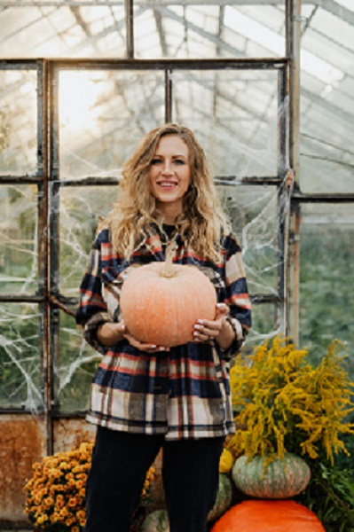

In 1975, our founder Mrs. Pumpkinhead Jr, had the idea for a fanatsical, spectacular, bombastical pumpkin patch. She called it the Ultimate Pumpkin Patch ™. However, this idea was born from war.
In 1973 the Pumpkinville pumpkin patch was founded by Earl O'Brien. The O'Briens pumpkin patch was the first pumpkin patch in Zoar Village and this rubbed Mrs. Pumpkinhead the wrong way.
There was a long standing feud boiled between Mrs. Pumpkinhead and Mr. O'Brien that has unknown origins and because of this Mrs. Pumpkinhead wanted to beat O'Brien at his own game. She preceeded to buy the biggest farmhouse in Zoar Village, the O'Riley estates. This farmhouse stood on over two acres of property!
This made it the perfect location for Mrs. Pumpkinheads idea for the Ultimate Pumpkin Patch ™ and the rest is history.
Nowadays the O'Briens and the Pumpkinheads have now become friendly competitors for the hearts of the people of Zoar Village. Both pumpkin patches actually have come together and give a multi-patch tour that takes visitors through the history of the Pumpkinheads and O'Briens farms.